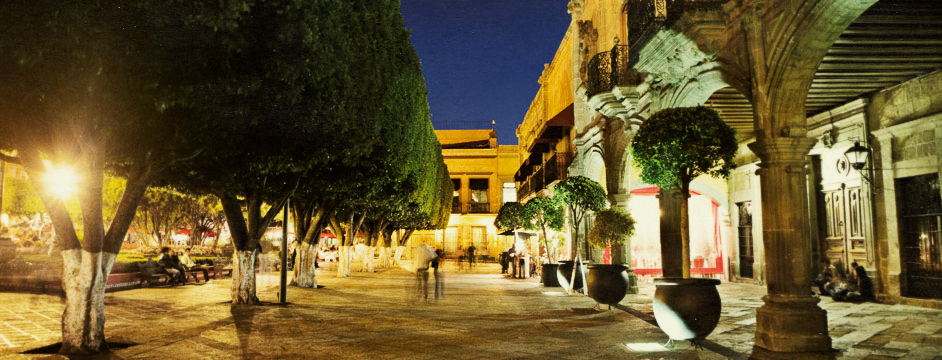
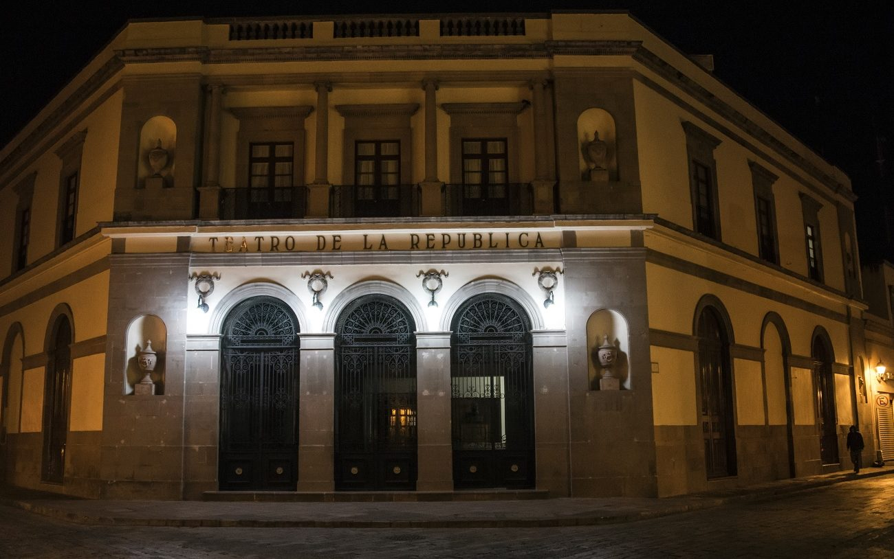
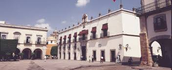

Lunes 27 de Agosto de 2018, Querétario.
Templo de la Cruz (o ex Convento de la Cruz), Considerado como un edificio de gran contenido religioso y Símbolo del nacimiento de Querétaro, México. Situado en la ciudad de Querétaro, entre las calles Independencia y Manuel Acuña.En 1531 guarda los orígenes de la fundación de Querétaro como una población cristiana del Virreinato.
Su fundador fue fray Antonio Lináez, y entre los célebres varones que salieron de allí se encuentran fray Junípero Serra y fray Antonio Margil de Jesús.El convento se construyó en 1683 para atender a los misioneros que llegaban a evangelizar esta zona,el mismo fue finalizado en el año 1735 por Don Pedro García de Acevedo y Calderón, durante el siglo XX el sitio fue remodelándose con la realización de lujosos retablos y algunas pinturas creadas por Juan Rodríguez Suárez, que representan las vidas de San Francisco de Asís y San Antonio de Padua.
Lunes 30 de Julio de 2018, Querétario.
En el edificio que alguna vez fue la casa del Corregidor Miguel Domínguez Alemán, y también de su esposa Doña Josefa Ortíz de Domínguez, actualmente se encuentra el Palacio de Gobierno del Estado de Querétaro. Conocida popularmente como la Casa de la Corregidora, este lugar que fue testigo del inicio abrupto de la guerra de la Independencia de México.
Este edificio es la antigua Casa de los Corregidores en épocas virreinales. Inició su construcción a mediados del siglo XVIII y concluyó hasta 1770, de estilo palaciego sus elevados muros están ornamentados con una sucesión de ventanas y balcones en sus dos niveles; la fachada se remata con recios macetones que parecen darle mayor solidez al conjunto. La obra fue concluida gracias a la donación de Martín José de la Roa, que a cambio de ser nombrado Corregidor Perpetuo, proporcionó lo necesario para su construcción.
Perseguimos el objetivo de realizar un viaje al mes, tratamos de gastar poco y queremos contarte cómo tú también puedes viajar por todo el mundo. ¡No te pierdas nada y... a viajar!